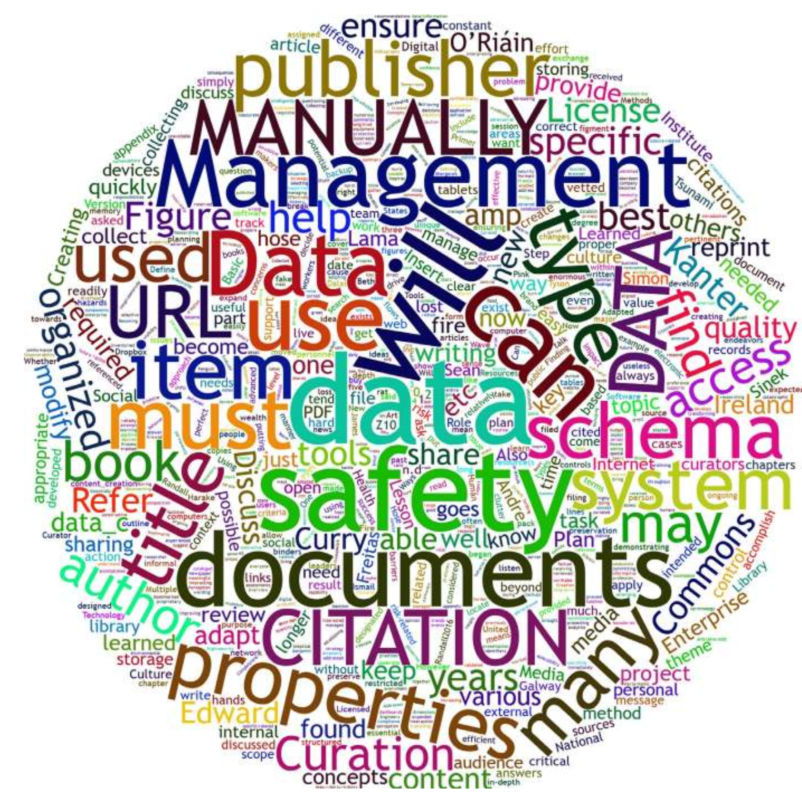
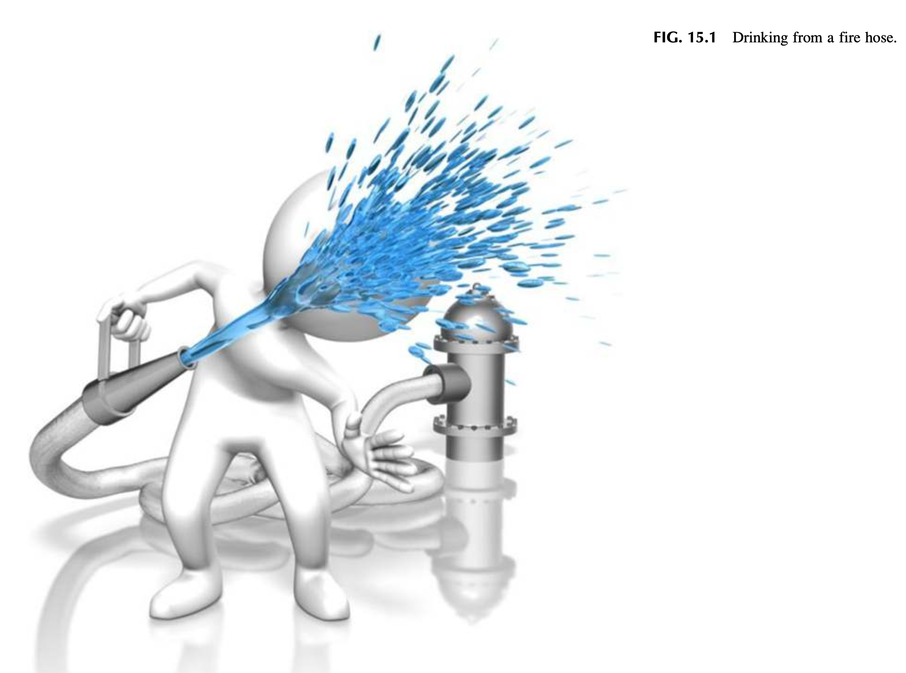

Chapter 15 Curating for the Safety Management System
Safety Culture. https://doi.org/10.1016/B978-0-12-814663-7.00015-7 ©2019 Elsevier Inc. All rights reserved. pp. 377–387
Safety Culture. https://doi.org/10.1016/B978-0-12-814663-7.00015-7 ©2019 Elsevier Inc. All rights reserved. pp. 377–387
Safety Culture. https://doi.org/10.1016/B978-0-12-814663-7.00015-7 ©2019 Elsevier Inc. All rights reserved. pp. 377–387


We’ve got to use every piece of data and piece of information, and hopefully that will help us be accurate with our player evaluation. For us, that’s our lifeblood.
— (Beane, 2018), General Manager Oakland As, subject of Moneyball
우리는 모든 데이터와 정보를 빠짐없이 활용해야 하며, 그것이 우리의 선수 평가를 정확하게 하는 데 도움이 되기를 바랍니다. 우리에게 그것이 바로 생명선(Lifeblood)입니다.
— (Beane, 2018), 오클랜드 애슬레틱스(Oakland As) 단장, 영화 《머니볼(Moneyball)》의 실제 주인공
Data is a precious thing and will last longer than the systems themselves.
— (Berners-Lee, 2018), father of the Worldwide Web
데이터는 소중한 자산이며 시스템 그 자체보다 더 오래 지속됩니다.
— (Berners-Lee, 2018), 월드와이드웹(Worldwide Web)의 창시자
The desire for wanting information with urgency and immediacy is “now” the expected norm and no longer reserved for only special situations. The internet, cloud-based storage, and use of multiple types of devices have resulted in the availability of a “fire hose” level stream of information, overwhelming researchers. This abundance of information and its continued expansion requires rethinking how data is collected, managed, and stored.
정보를 긴급하고 즉각적으로 얻고자 하는 욕구는 이제 특별한 상황에만 국한되지 않고 기대되는 일상적 규범(Norm)이 되었다. 인터넷, 클라우드 기반 저장소, 그리고 다양한 유형의 기기 사용은 연구자들을 압도하는 ‘소방 호스(Fire hose)’ 수준의 정보 흐름을 만들어 냈다. 이러한 정보의 풍요로움과 지속적인 팽창은 데이터를 어떻게 수집하고, 관리하며, 저장할 것인지에 대한 재고를 요구한다.
The scope is beyond just having a filing system. A library and curation methodology and structure should be adapted to organize all of the various media used to accomplish assigned tasks and responsibilities. Any system selected should take into consideration hard and e-copies of materials, relevant website links, documents, reports, loss data, risk assessments, books, and much more. The objective is to establish a system designed to quickly access and retrieve required or relevant information for a timely response when requested.
그 범위는 단순히 파일 정리 시스템(Filing system)을 갖추는 것을 넘어선다. 부여된 과업과 책임을 완수하기 위해 사용되는 모든 다양한 매체를 체계화할 수 있도록 도서관 및 큐레이션(Curation) 방법론과 구조를 적용해야 한다. 선택되는 어떠한 시스템이든 인쇄물 및 전자 문서 자료, 관련 웹사이트 링크, 문서, 보고서, 손실 데이터, 위험성평가, 도서 등 훨씬 더 많은 요소를 포괄적으로 고려해야 한다. 그 목적은 요청이 있을 때 시의적절한 대응을 위해 필요하거나 관련된 정보에 신속하게 접근하고 검색할 수 있도록 설계된 시스템을 구축하는 데 있다.
A common theme throughout the book is the emphasis on communication and the flow of information through an organization. The safety process and safety culture are dependent on the leadership team and employees maintaining open lines of communication and the delivery of impartial and factual messages.
이 책 전반에 걸친 공통 주제는 조직 내 의사소통(Communication)과 정보의 흐름에 대한 강조이다. 안전 프로세스와 안전 문화(Safety culture)는 리더십 팀과 근로자가 열린 의사소통 경로를 유지하고 공정하며 사실에 기반한 메시지를 전달하는 데 달려 있다.
Curation began as “The act of organizing and maintaining a collection of artworks or artifacts” (Curation, 2017). Over several centuries, as personal collections of scientists, royalty, wealthy patrons of the arts, and so on, became extensive, the art of curation began to evolve from placing items on a shelf or wall to categorizing, preserving, and organizing how they were displayed or stored.
큐레이션(Curation)은 “예술품이나 유물의 수집품을 정리하고 유지·관리하는 행위”에서 시작되었다(Curation, 2017). 수 세기에 걸쳐 과학자, 왕족, 부유한 예술 후원자 등의 개인 소장품이 방대해짐에 따라, 큐레이션의 기술은 단순히 선반이나 벽에 물건을 올려두는 것에서 전시되거나 보관되는 방식을 분류하고, 보존하며, 체계화하는 것으로 발전하기 시작했다.
The art of curation now includes not just items for display but the gathering, organizing, and maintaining all types of information, in all forms of media. Insights from curation of art have led to examining how information is cataloged, stored, and organized for retrieval.
오늘날 큐레이션의 기술은 단순히 전시용 물품뿐만 아니라 모든 형태의 매체에 담긴 모든 유형의 정보를 수집하고, 체계화하며, 유지·관리하는 것을 포함한다. 미술 큐레이션에서 얻은 통찰은 정보가 어떻게 목록화되고, 저장되며, 검색을 위해 체계화되는지를 살펴보는 데로 이어졌다.
In today’s environment, collecting and storing information is known as “curation.” This is just like an art museum, where a person is in charge of organizing art or exhibits.
오늘날의 환경에서 정보를 수집하고 저장하는 행위는 “큐레이션(Curation)”으로 알려져 있다. 이는 미술관에서 한 사람이 예술품이나 전시물을 체계적으로 정리하는 역할을 맡는 것과 정확히 같다.
Safety professionals by the nature of their responsibilities are the main information resource for specialized Safety Management System (SMS) information. Safety professionals essentially become an organization’s memory, providing direct knowledge, expertise and, through the curation process, documentation of hazards, associated risk, SMS performance, regulatory compliance, etc. The safety professional should have curation systems in place for locating and validating requested or necessary information as quickly as possible to get it to the appropriate decision makers for action.
안전 전문가(Safety professionals)는 그 직무 책임의 본질상 전문적인 안전경영시스템(Safety Management System, SMS) 정보의 핵심 정보원이다. 안전 전문가는 본질적으로 ‘조직의 기억(An organization’s memory)’이 되어 직접적인 지식과 전문성을 제공하며, 큐레이션 과정을 통해 유해위험요인, 관련 위험, SMS 성과, 법규 준수(Regulatory compliance) 등에 관한 문서화 자료를 제공한다. 안전 전문가는 요청되거나 필요한 정보를 가능한 한 신속하게 찾아내어 검증하고, 조치를 취할 수 있도록 적절한 의사결정자에게 전달할 수 있는 큐레이션 시스템을 갖추어야 한다.
The safety professionals should have a basic knowledge of curation and research techniques so that they provide quality reports, newsletter articles, safety manuals and guidelines, and training sessions. Having good research skills can be applied to many areas or professional life including when working on a professional certification or degree.
안전 전문가는 양질의 보고서, 뉴스레터 기사, 안전 매뉴얼 및 지침, 그리고 교육 세션을 제공할 수 있도록 큐레이션 및 연구 기법에 대한 기본 지식을 갖추어야 한다. 훌륭한 연구 역량을 갖추는 것은 전문 자격증이나 학위 취득을 준비할 때를 포함하여 직업 생활의 많은 영역에 적용될 수 있다.
When this chapter is completed, you should be able to:
이 장을 학습하고 나면, 다음을 설명하고 식별할 수 있게 된다:
Content curation is not just collecting and bookmarking web links or becoming an information pack rat. It requires establishing a process for gathering, sorting, categorizing, and annotating the appropriate information into an organized structure designed to allow for its retrieval as needed. Curators provide a customized, vetted selection of the best and most appropriate resources on a particular topic or theme for timely use in guiding leadership decisions and the administration of SMS.
콘텐츠 큐레이션은 단순히 웹 링크를 수집하여 북마크하거나 무분별하게 정보를 쌓아두는 정보 수집광(Information pack rat)이 되는 것이 아니다. 그것은 필요할 때 검색할 수 있도록 설계된 체계적인 구조 속으로 적절한 정보를 수집(Gathering), 선별(Sorting), 분류(Categorizing), 주석 달기(Annotating)하는 프로세스를 수립하는 것을 요구한다. 큐레이터는 리더십의 의사결정을 안내하고 SMS를 운영하는 데 시의적절하게 활용할 수 있도록 특정 주제나 테마에 관한 가장 우수하고 적절한 자원을 맞춤형으로 엄선하여(Vetted selection) 제공한다.
Organizations feed on information and data transmitted from many sources, both internal and external. As a result, communication has to be, understandable, well designed, and logically organized. Curation provides the structure which separates desired accurate information from the constant background clutter of suspect and useless items also moving through an organization’s network. The Internet and extensive use of social media, infinite apps for almost any topic. and cloud-based content, have flipped society from receiving information through limited, restricted sources into a vast ocean of information and data readily accessed by anyone with an inexpensive device. Sources and information in this “ocean” may not be correct, current, or from a trusted source. While the search for content has been made routine and easy, any curation process has to include methods to evaluate information before it is accepted for use (refer Fig. 15.1).
조직은 내부와 외부의 수많은 출처로부터 전달되는 정보와 데이터를 바탕으로 작동한다. 그 결과, 의사소통은 이해하기 쉽고, 잘 설계되며, 논리적으로 체계화되어야 한다. 큐레이션은 조직의 네트워크를 통해 이동하는 의심스럽고 쓸모없는 항목들의 끊임없는 배경 잡음(Background clutter)으로부터 원하는 정확한 정보를 분리해 내는 구조를 제공한다. 인터넷과 소셜 미디어의 광범위한 사용, 거의 모든 주제를 다루는 무한한 앱, 그리고 클라우드 기반 콘텐츠는 사회를 제한적이고 한정된 출처로부터 정보를 받던 상태에서, 저렴한 기기를 가진 누구나 쉽게 접근할 수 있는 방대한 정보와 데이터의 바다로 뒤바꾸어 놓았다. 이 “바다” 속의 출처와 정보는 정확하지 않거나, 최신이 아니거나, 신뢰할 수 있는 출처에서 나온 것이 아닐 수 있다. 콘텐츠 검색이 일상적이고 쉬워진 반면, 모든 큐레이션 프로세스는 정보를 사용하도록 승인하기 전에 이를 평가하는 방법을 포함해야 한다(그림 15.1 참조).

As a safety professional becomes the knowledgeable resource who finds and provides the answers to inquiries and questions, their ability to influence the leadership team and employees increases. When the employees and leaders of an organization trust the safety professional for reliable answers to their inquiries, the likelihood for increasing the positive perception of the safety professional and the SMS should, in turn, strengthen the safety culture.
안전 전문가가 문의와 질문에 대한 답을 찾아 제공하는 박식한 자원이 될수록, 리더십 팀과 근로자에게 미치는 영향력은 커진다. 조직의 근로자와 리더들이 자신들의 질문에 대해 신뢰할 수 있는 답변을 얻기 위해 안전 전문가를 신뢰할 때, 안전 전문가와 SMS에 대한 긍정적 지각(Perception)이 높아질 가능성이 커지며, 이는 결국 안전 문화를 강화하게 된다.
Making a decision based on incomplete, inaccurate, or wrong information can have disastrous consequences. Decision-making knowledge workers need to have access to the right information and need to have confidence in that information. Data curation can be a vital tool to ensure knowledge workers have access to accurate, high-quality, and trusted information could reliably track back to the source, to ensure its credibility.
— (Curry & O’Riáin, 2010)
불완전하거나, 부정확하거나, 잘못된 정보에 근거하여 내린 결정은 재앙적인 결과를 초래할 수 있다. 의사결정을 내리는 지식 근로자(Knowledge workers)는 올바른 정보에 접근할 수 있어야 하며 그 정보에 대한 확신을 가질 필요가 있다. 데이터 큐레이션은 지식 근로자가 신뢰성을 보장하기 위해 출처까지 확실히 역추적할 수 있는 정확하고, 고품질이며, 신뢰할 수 있는 정보에 접근하도록 보장하는 필수적인 도구가 될 수 있다.
— (Curry & O’Riáin, 2010)
Curry and O’Riáin suggest: The following data quality dimensions are highly relevant within the context of enterprise data and business users:
(Curry & O’Riáin, 2010)
커리와 오리안(Curry and O’Riáin)은 다음과 같이 제안한다: 기업 데이터와 비즈니스 사용자의 맥락에서 다음의 데이터 품질 차원(Data quality dimensions)이 매우 높은 관련성을 지닌다:
(Curry & O’Riáin, 2010)

SMS criteria as found in ANSI Z10-2012 requires a process be established to create and maintain documents and records. The document and record control process records what has been created and maintained to “Implement an effective OHSMS and demonstrate or assess conformance with the requirements of this standard.”
— (Occupational Health & Safety Management Systems, 2012)
ANSI Z10-2012에 명시된 SMS 기준은 문서와 기록을 작성하고 유지·관리하기 위한 프로세스를 수립하도록 요구한다. 문서 및 기록 통제 프로세스는 “효과적인 직업안전보건경영시스템(OHSMS)을 실행하고 이 표준의 요구사항에 대한 적합성을 입증하거나 평가하기 위해” 무엇이 작성되고 유지·관리되었는지를 기록한다.
— (Occupational Health & Safety Management Systems, 2012)
Increasing amounts of information are available in many formats and a multitude of web-based sites, apps, and other resources. The universal use of smartphones, tablets, computers, and other devices have opened unlimited search capabilities to both leaders and employees. The shift in emphasis is from not just providing material to ensuring the information is accurate and from reliable resources. Increased information is now a serious challenge to understand, dissect, and decide the “real” data or information from the fake information a search may encounter (Pink, 2012; refer Fig. 15.2).
다양한 형식과 수많은 웹 기반 사이트, 앱, 그리고 기타 자원을 통해 점점 더 많은 양의 정보를 이용할 수 있게 되었다. 스마트폰, 태블릿, 컴퓨터 및 기타 기기의 보편적인 사용은 리더와 근로자 모두에게 무제한적인 검색 역량을 열어 주었다. 이제 강조점은 단순히 자료를 제공하는 것에서 벗어나 정보가 정확하고 신뢰할 수 있는 출처에서 나온 것임을 보장하는 것으로 이동하였다. 증가한 정보는 검색 과정에서 마주칠 수 있는 가짜 정보로부터 “진짜” 데이터나 정보를 이해하고, 해부하며, 판별해 내야 하는 심각한 도전 과제가 되었다(Pink, 2012; 그림 15.2 참조).
The mandate has been for some years to become more effective curators in organizing the information collected to ensure that it is accurate and up to date.
수집된 정보가 정확하고 최신 상태인지 보장하기 위해 정보를 체계화하는 데 있어 보다 효과적인 큐레이터가 되어야 한다는 요구는 수년 전부터 이어져 왔다.
Curating content for your expertise is a perfect way to showcase what you know and care about.
— (Randall, 2016)
자신의 전문 분야를 위해 콘텐츠를 큐레이션하는 것은 자신이 무엇을 알고 무엇에 관심을 기울이는지 보여 주는 완벽한 방법이다.
— (Randall, 2016)
An issue the authors have encountered within organizations is that situations exist where safety-related information is spread across many departments. Human Resources may have a form used for new hire orientation, on-boarding, and provide a level of basic training.
저자들이 조직 내에서 마주한 한 가지 문제는 안전 관련 정보가 여러 부서에 걸쳐 분산되어 있는 상황이 존재한다는 점이다. 인적자원부서(HR)는 신규 채용자 오리엔테이션 및 온보딩에 사용하는 양식을 보유하고 기본적인 수준의 교육을 제공할 수 있다.
Operations may have detailed work instructions with specific systematic procedures but are written without detailed safety-related criteria.
운영부서(Operations)는 구체적이고 체계적인 절차를 담은 상세한 작업 지침서를 보유하고 있을 수 있으나, 세부적인 안전 관련 기준 없이 작성되어 있다.
Quality Control has its applications if the product is to meet the various standards mandated by its industry or regulatory agencies.
품질관리부서(Quality Control)는 제품이 해당 산업이나 규제 기관이 의무화한 다양한 표준을 충족하도록 하는 자체 적용 기준을 가지고 있다.
Each of these areas may have included safety-related criteria using different or dated nomenclature, wording, and criteria which may conflict or confuse the leadership team and employees.
이들 각 영역은 서로 다르거나 구식인 명명법, 표현, 그리고 기준을 사용하여 안전 관련 기준을 포함시켰을 수 있으며, 이는 리더십 팀과 근로자 사이에 충돌을 일으키거나 혼란을 줄 수 있다.
In one case, the authors noted an entire safety manual had been produced and was unknown to the safety department which did not comply with the safety policies in place.
한 사례에서 저자들은 안전 부서가 전혀 알지 못하는 상태에서 전체 안전 매뉴얼이 제작되었고, 그것이 시행 중인 안전 정책을 준수하지 않았던 경우를 확인하였다.
The challenge of curation is to bring together all the various documents and ensure they are aligned, current and comprehensive in order to reduce the potential for loss-producing events.
큐레이션의 과제는 손실 발생 사건(Loss-producing events)의 잠재력을 줄이기 위해 모든 다양한 문서를 하나로 모으고, 그것들이 서로 정렬되고(Aligned), 최신 상태이며(Current), 포괄적(Comprehensive)이도록 보장하는 것이다.
A reworked cliche, “if you cannot find it, it does not exist!” applies to the process of curation. The best of safety, health, or risk-related information may be on hand somewhere, but if it cannot be located and produced, then it is only a figment of the imagination.
“찾을 수 없다면 존재하지 않는 것이다!(If you cannot find it, it does not exist!)”라는 변형된 상투적 문구가 큐레이션 프로세스에 적용된다. 아무리 훌륭한 안전, 보건 또는 위험 관련 정보가 어딘가에 구비되어 있더라도, 그것을 찾아내어 제시할 수 없다면 그것은 상상의 산물에 불과하다.
Safety has been presented as an intangible “emerging property” developing from the interaction of the many components of a complex adaptive system, i.e. an organization. By necessity, the safety professional needs to have a working knowledge or a resource providing information on just about anything and everything associated with the organization.
안전은 복잡적응계(Complex adaptive system), 즉 조직의 수많은 구성 요소 간 상호작용으로부터 발현되는 무형의 “창발적 특성(Emerging property)”으로 제시되어 왔다. 필연적으로 안전 전문가는 조직과 관련된 거의 모든 것에 대한 실무 지식이나 정보를 제공하는 자원을 갖추어야 한다.
…Providing visibility to key decision makers to use the tools such as dashboards and analytics will ensure that decisions are made intelligently and at the right time to prevent any adverse events that can result from a catastrophic failure.
— (Ismail, 2012)
…주요 의사결정자들이 대시보드(Dashboards)와 분석 도구(Analytics) 같은 도구를 활용할 수 있도록 가시성(Visibility)을 제공하는 것은 파국적 실패로 이어질 수 있는 모든 불리한 사건을 예방하기 위해 적시에 지능적인 의사결정이 이루어지도록 보장할 것이다.
— (Ismail, 2012)
For a safety culture to be maintained, it should have the best possible process designed to preserve a set level of knowledge as required by an entity’s operations and environment. As personnel and leadership come and go, reorganizations and mergers are completed, and new endeavors began, information can quickly disappear without a comprehensive method for retaining and maintaining documents or records.
안전 문화가 유지되기 위해서는, 조직의 운영과 환경에 의해 요구되는 일정 수준의 지식을 보존하도록 설계된 최선의 프로세스를 갖추어야 한다. 인력과 리더십이 교체되고, 조직 개편과 합병이 이루어지며, 새로운 사업이 시작됨에 따라, 문서나 기록을 보유하고 유지·관리하기 위한 포괄적인 방법이 없다면 정보는 빠르게 사라질 수 있다.
To the degree possible, curation prevents resources from being expended on redoing materials or searching for information already once identified, developed or lost and unavailable due to being incorrectly categorized. Obsolete information no longer required can be taking up space, not pertinent to current situations, outdated, or be unnecessarily duplicated.
가능한 한, 큐레이션은 이미 한 번 식별되고 개발되었으나 잘못 분류되어 분실되거나 이용할 수 없게 된 자료를 다시 만들거나 찾는 데 자원이 낭비되는 것을 방지한다. 더 이상 필요하지 않은 구식 정보(Obsolete information)는 공간을 차지하고, 현재 상황과 무관하며, 시대에 뒤떨어져 있거나, 불필요하게 중복되어 있을 수 있다.
The human trait to collect “STUFF” from various resources has always been a major issue for organizations. From both personal or professional perspectives, the ease and simplicity of saving information and data on a computer desktop, cloud server or hard drive increases the tendency to collect and hoard information. The curation problem has expanded into the electronic filing system where hidden clutter exists, out of sight, with no tangible physical materials. Cloud-based file storage has the same problems as the traditional hardcopy filing systems. They can also be lost or destroyed as readily as paper with computer crashes, hackers, loss of servers. The security of files of all types have increased in importance and has to be considered in the curation process.
다양한 출처로부터 “잡동사니(STUFF)”를 수집하는 인간의 습성은 조직에게 항상 큰 문제였다. 개인적 관점과 직업적 관점 모두에서 컴퓨터 바탕화면, 클라우드 서버 또는 하드 드라이브에 정보와 데이터를 저장하는 것이 쉽고 간편해짐에 따라 정보를 수집하고 쌓아두는(Hoard) 경향이 커진다. 큐레이션 문제는 가시적인 실물 자료 없이 보이지 않는 곳에 숨겨진 혼잡(Hidden clutter)이 존재하는 전자 파일링 시스템으로까지 확장되었다. 클라우드 기반 파일 저장소 역시 전통적인 인쇄물 파일링 시스템과 동일한 문제를 안고 있다. 컴퓨터 충돌, 해커, 서버 손실 등으로 종이만큼이나 쉽게 분실되거나 파괴될 수 있다. 모든 유형의 파일 보안은 중요성이 커졌으며 큐레이션 프로세스에서 반드시 고려되어야 한다.
Establishing an information collection and storage process is similar to quality improvement methods such as the “5S”. The principles of 5S are directly applicable to the curation process. 5S was developed to reduce clutter, waste of space, improve orderliness and standardization. The original 5S principles have been useful in designing quality work environment. The 5S condition of a work environment including the office has been found to benefit employee morale. Leadership’s mindset and outlook regarding employees can be reflected the condition of the work area.
정보 수집 및 저장 프로세스를 수립하는 것은 “5S”와 같은 품질 개선 기법과 유사하다. 5S의 원칙은 큐레이션 프로세스에 직접 적용될 수 있다. 5S는 혼잡(Clutter)과 공간 낭비를 줄이고 정돈(Orderliness)과 표준화(Standardization)를 개선하기 위해 개발되었다. 본래의 5S 원칙은 양질의 작업 환경을 설계하는 데 유용해 왔다. 사무실을 포함한 작업 환경의 5S 상태는 직원의 사기(Morale)에 유익한 영향을 미치는 것으로 밝혀졌다. 직원에 대한 리더십의 사고방식과 관점은 작업 공간의 상태에 반영될 수 있다.
The 5S condition of a work area is critical to the morale of employees and the basis of customers’ first impressions.
작업 공간의 5S 상태는 직원의 사기에 결정적이며 고객의 첫인상의 기초가 된다.
"Leadership’s attitude regarding employees is reflected in the 5S condition of the work area.”
"직원에 대한 리더십의 태도는 작업 공간의 5S 상태에 반영된다.”
The 5S program supports the workplace housekeeping saying, “A place for everything and everything has its place.” An ongoing effort is essential for organizing information in all its forms and requires a disciplined to keep ahead of the information.
5S 프로그램은 “모든 것에는 제자리가 있고, 모든 것은 제자리에 있다(A place for everything and everything has its place)”라는 작업장 정리정돈 격언을 뒷받침한다. 모든 형태의 정보를 체계화하기 위해서는 지속적인 노력이 필수적이며, 정보에 뒤처지지 않기 위한 규율(Discipline)이 요구된다.
When James became a plant safety professional, he became the “owner” of multiple file cabinets full of hardcopy safety-related material accumulated over the years. Although the information was extensive, it had lost its original organization and purpose. Information may be somewhere in one of the file cabinets but was hard to find, in disarray, as well as multiple copies of many items the previous safety professional had created over the years. James’ task became an extensive effort to get the material organized, a task which took about two years of sorting, updating information as appropriate, locating new resources, and discarding outdated information.
제임스(James)가 공장의 안전 전문가가 되었을 때, 그는 수년에 걸쳐 축적된 인쇄물 안전 관련 자료로 가득 찬 여러 개의 파일 캐비닛의 “주인”이 되었다. 정보는 방대했으나 본래의 체계와 목적을 잃은 상태였다. 정보는 파일 캐비닛 중 어딘가에 들어 있을지 모르나 찾기가 어려웠고 무질서했으며, 이전 안전 전문가가 수년간 만든 수많은 항목의 중복 사본들도 섞여 있었다. 제임스의 과업은 그 자료를 체계화하는 방대한 작업이 되었고, 분류하고 적절히 정보를 업데이트하며 새로운 자원을 찾고 구식 정보를 폐기하는 데 약 2년이 걸렸다.
The authors have found similar cases with clients and organizations where curation took a back seat to more pressing priorities. Curation falls into Covey’s “Important but not Urgent” area of time management and does not receive the attention needed (Covey, 1990).
저자들은 고객사 및 여러 조직에서 큐레이션이 더 시급한 우선순위에 밀려 뒷전으로 밀려난 유사한 사례들을 발견하였다. 큐레이션은 코비(Covey)의 시간 관리 영역 중 “중요하지만 긴급하지 않은(Important but not Urgent)” 영역에 속하기 때문에 필요한 관심을 받지 못한다(Covey, 1990).
Creating high-quality content is one critical path which helps facilitate and enhance discussions to sell an idea and build a unique brand. Creating quality content helps one to position themselves as an expert in an area. Sharing and collaborating is demonstrating what one has learned through research. These methods help to show personal value to the intended audience, such as other professionals, the leadership team, employees in the organization, peers, and so on.
고품질 콘텐츠를 제작하는 것은 아이디어를 설득하고 고유한 브랜드(Unique brand)를 구축하기 위한 논의를 촉진하고 강화하는 핵심 경로 중 하나이다. 양질의 콘텐츠를 제작하면 특정 분야의 전문가로 자리매김하는 데 도움이 된다. 공유하고 협업하는 것은 연구를 통해 배운 바를 입증하는 것이다. 이러한 방법들은 다른 전문가, 리더십 팀, 조직 내 근로자, 동료 등 의도된 청중에게 개인적 가치를 보여 주는 데 도움이 된다.
Before beginning the curation process, questions to ask include:
큐레이션 프로세스를 시작하기 전에 던져야 할 질문들은 다음과 같다:
People don’t buy what you do; they buy why you do it. And what you do simply proves what you believe.
— (Sinek, 2009)
사람들은 당신이 무엇을 하는지를 사지 않는다; 그들은 당신이 왜 그것을 하는지를 산다. 그리고 당신이 하는 일은 단지 당신이 믿는 바를 증명할 뿐이다.
— (Sinek, 2009)
Sinek advocate asking, “Do you know your Why?”, “The purpose, cause, or belief that inspires you to do what you do?” (Sinek, 2009) When deciding on what has been learned and is to be shared with others, the process begins by asking “Why.” What does the intended audience or person need? Gathering information takes time and commitment to collect, evaluate, structure, and exchange information in a meaningful way such as:
사이넥(Sinek)은 “당신의 왜(Why)를 알고 있는가?”, 즉 “당신이 하는 일을 하도록 영감을 주는 목적, 대의, 또는 신념이 무엇인가?”를 질문하라고 주창한다(Sinek, 2009). 배운 것 중 무엇을 다른 사람들과 공유할지 결정할 때, 그 과정은 “왜(Why)”를 묻는 것으로 시작된다. 의도된 청중이나 상대방이 필요로 하는 것은 무엇인가? 정보를 수집하는 데는 다음과 같이 의미 있는 방식으로 정보를 수집, 평가, 구조화 및 교환하기 위한 시간과 헌신이 필요하다:
The answers to these questions can help to develop a strategy for potential ways to drive action and help change behaviors in specific areas.
이러한 질문들에 대한 답변은 특정 영역에서 행동을 이끌어 내고 행태 변화를 돕기 위한 잠재적 방안에 대한 전략을 개발하는 데 도움을 줄 수 있다.
Three areas should be considered when developing a process for curating and using information:
정보를 큐레이션하고 활용하는 프로세스를 개발할 때는 다음 세 가지 영역을 고려해야 한다:
These three areas ensure information gathered is clear and concise allowing the intended audience not just to receive reliable information but be able to use the resources.
이 세 가지 영역은 수집된 정보가 명확하고 간결하도록 보장하여, 의도된 청중이 신뢰할 수 있는 정보를 받을 뿐만 아니라 그 자원을 실제로 활용할 수 있게 한다.
If asked to explain a standard, write a memo on a safety-related topic, complete a standard review, or write a summary report, how would you begin? How would the findings be presented? When asked to present safety management system information to others, how do you prepare and review the information to keep it informative, timely, and of value to the employees or professionals expected to use it?
표준을 설명하거나, 안전 관련 주제에 대한 메모를 작성하거나, 표준 검토를 완료하거나, 요약 보고서를 작성해 달라는 요청을 받는다면 어떻게 시작할 것인가? 발견한 내용은 어떻게 제시할 것인가? 다른 사람들에게 안전경영시스템 정보를 발표하도록 요청받았을 때, 그것을 활용할 것으로 기대되는 근로자나 전문가들에게 유익하고 시의적절하며 가치 있게 유지하기 위해 정보를 어떻게 준비하고 검토하는가?
Content curation is not about collecting and bookmarking web links or becoming an information pack rat: it is more about putting gathered information into a context that is filed, organized, annotated, and can be readily developed for presentation. Content curators provide a customized, vetted selection of the best and most relevant resources on a particular topic or theme. According to Bhargava as cited in (Kanter, 2017) “a content curator continually seeks, makes sense of, and shares the best and most relevant content on a particular topic online. Content curators have integrated this skill into their daily routine” (Kanter, 2017).
콘텐츠 큐레이션은 웹 링크를 수집해 북마크하거나 정보 수집광이 되는 것이 아니다. 그것은 수집된 정보를 파일링하고, 체계화하며, 주석을 달아 발표를 위해 즉시 발전시킬 수 있는 맥락 속으로 배치하는 것이다. 콘텐츠 큐레이터는 특정 주제나 테마에 대해 가장 우수하고 관련성 높은 자원을 맞춤형으로 엄선하여 제공한다. 칸터(Kanter, 2017)에 인용된 바르가바(Bhargava)에 따르면 “콘텐츠 큐레이터는 온라인상에서 특정 주제에 관한 가장 우수하고 관련성 높은 콘텐츠를 지속적으로 탐색하고, 의미구성(Makes sense of)을 하며, 공유한다. 콘텐츠 큐레이터는 이러한 역량을 자신의 일상적 루틴에 통합해 놓았다”(Kanter, 2017).
The authors believe a direct parallel exists between writing a book and managing a safety management system. A book requires a central theme supported by expertise, reliable resources, and research. During writing this book, several thousand documents, as well as many other reference materials, had to be read, categorized, and sorted through to find safety culture-related information. Finding the appropriate documents was relatively easy but time consuming, the scope and depth of available resources. To retrieve, organize, and be able to provide references and proper citations remain the challenge. Sources must be found to support comments, conclusions, and recommendations.
저자들은 책을 집필하는 것과 안전경영시스템을 관리하는 것 사이에 직접적인 평행성(Direct parallel)이 존재한다고 믿는다. 한 권의 책은 전문성, 신뢰할 수 있는 자원, 그리고 연구에 의해 뒷받침되는 중심 주제를 필요로 한다. 이 책을 집필하는 동안 안전 문화 관련 정보를 찾기 위해 수많은 참고 자료뿐만 아니라 수천 건의 문서를 읽고, 분류하며, 선별해야 했다. 적절한 문서를 찾는 것은 이용 가능한 자원의 범위와 깊이 때문에 비교적 쉬웠지만 시간이 많이 걸렸다. 검색하고, 체계화하며, 참고문헌과 적절한 인용을 제공할 수 있는 능력은 여전히 과제로 남는다. 논평, 결론 및 권고사항을 뒷받침할 출처를 반드시 찾아야 한다.
Quantity does not mean quality or whether the material is accurate or correct. Given the pervasive access to internet sources, leadership and employees will bring articles they have researched to be evaluated for accuracy and content. The information may have already been communicated to the organization before Review creating severe issues if inaccurate.
양(Quantity)이 곧 질(Quality)이나 자료가 정확하고 올바른지 여부를 의미하지는 않는다. 인터넷 출처에 대한 접근이 보편화됨에 따라, 리더십과 근로자들은 정확성과 내용을 평가해 달라며 자신들이 조사한 기사들을 가져올 것이다. 그 정보가 부정확할 경우 검토(Review)되기도 전에 이미 조직에 전파되어 심각한 문제를 야기할 수 있다.
Even when keeping track of trends in professional sources and what is advocating a skeptical approach is always required. Use of any research information should be first validated by experience, expertise, or further comments, conclusions, and recommendations.
전문 출처의 동향과 주창되는 바를 추적할 때조차도 항상 회의적인(Skeptical) 접근이 요구된다. 어떠한 연구 정보든 사용하기 전에 경험, 전문성, 또는 추가적인 논평·결론·권고사항을 통해 먼저 검증되어야 한다.
The following guidelines from the University of Edinburgh Research Data Management Guidance were adapted from a data management planning checklist. It is essentially a curation process and provides questions used when addressing and sharing data (Research Data Management Guidance, 2011).
다음 지침은 에든버러 대학교 연구 데이터 관리 지침(University of Edinburgh Research Data Management Guidance)의 데이터 관리 계획 체크리스트에서 차용·적용한 것이다. 이는 본질적으로 큐레이션 프로세스이며 데이터를 다루고 공유할 때 사용되는 질문들을 제공한다(Research Data Management Guidance, 2011).
Refer Fig. 15.3, for a basic overview of planning your research. Refer Chapter 16 for a discussion regarding “Social Media Tools for the Professional” to enhance the planning process.
연구 계획 수립의 기본 개요는 그림 15.3을 참조하라. 계획 수립 프로세스를 강화하기 위한 “전문가를 위한 소셜 미디어 도구(Social Media Tools for the Professional)”에 관한 논의는 제16장을 참조하라.
Questions before beginning establishing a data management process:
데이터 관리 프로세스 수립을 시작하기 전의 질문들:
Adapted from Research Data Management Guidance (2011).
Research Data Management Guidance (2011)에서 차용·적용함.

A data management plan describes the creating, organizing, documenting, storing, and sharing data. The plan would cover protection and confidentiality, preservation, and curation. It provides a framework that supports the safety management system documents, materials, and information.
데이터 관리 계획(Data management plan)은 데이터의 생성, 체계화, 문서화, 저장 및 공유를 기술한다. 이 계획은 보호 및 기밀 유지, 보존, 그리고 큐레이션을 포괄한다. 이는 안전경영시스템 문서, 자료 및 정보를 지원하는 프레임워크를 제공한다.
Adapted from Research Data Management Guidance (2011).
Research Data Management Guidance (2011)에서 차용·적용함.
Technology has changed the landscape of how an organization controls the SMS. Information can be moved effortlessly and quickly well beyond the traditional boundaries of an organization. The SMS can be the firewall ensuring employees that the communications pathways are open and useful. Also, their concerns need to be addressed quickly and comprehensively through valid information and reliable data management (refer Fig. 15.4).
기술은 조직이 SMS를 통제하는 방식의 지형을 바꾸어 놓았다. 정보는 조직의 전통적인 경계를 훨씬 넘어 손쉽고 빠르게 이동할 수 있다. SMS는 근로자들에게 의사소통 경로가 열려 있고 유용하다는 것을 보장하는 방화벽(Firewall)이 될 수 있다. 또한 그들의 우려사항은 타당한 정보와 신뢰할 수 있는 데이터 관리를 통해 신속하고 포괄적으로 다루어져야 한다(그림 15.4 참조).

Curation methods are dependent on personal preference, organizational protocols, and storage capability. A wide range of methods and concepts are available and beyond the scope of this book. The organization may have a “knowledgeable manager” and developed procedures for storage and retrieval of information. If not, use the system found most efficient for SMS purposes.
큐레이션 방법은 개인의 선호도, 조직의 프로토콜 및 저장 역량에 따라 달라진다. 광범위한 방법과 개념이 존재하며 이는 이 책의 범위를 벗어난다. 조직에는 “유능한 관리자(Knowledgeable manager)”가 있고 정보의 저장 및 검색을 위한 절차가 개발되어 있을 수 있다. 그렇지 않다면, SMS 목적에 가장 효율적인 것으로 판단되는 시스템을 사용하라.
The objective of any data collection system is adopting a library filing methodology and structure to organize all literature collected.
모든 데이터 수집 시스템의 목적은 수집된 모든 문헌을 체계화하기 위해 도서관 파일링 방법론과 구조를 채택하는 것이다.
A “Content Creation Strategy” can be developed using various methods for effectively researching and curating information. The objective of Chapter 16, "Social Media Tools for the Professional" will be to outline and discuss selected software tools which can help in developing a strategy to efficiently research relevant information to support a safety management system.
정보를 효과적으로 연구하고 큐레이션하기 위한 다양한 방법을 사용하여 “콘텐츠 제작 전략(Content Creation Strategy)”을 개발할 수 있다. 제16장 “전문가를 위한 소셜 미디어 도구(Social Media Tools for the Professional)”의 목적은 안전경영시스템을 지원하기 위해 관련 정보를 효율적으로 연구하는 전략을 개발하는 데 도움이 되는 엄선된 소프트웨어 도구들을 개관하고 논의하는 것이다.
Refer Chapter 16, Appendix 16.1, “Social Media Tools for the Professional,” for a brief review of social media tools that are available to aid in the curation process. Refer Chapter 16, Appendix 6.2, “Using Feedly to Find Content for Curation, a Case Study” where the art of using Feedly will be demonstrated on how to take advantage of the many features available.
큐레이션 프로세스를 지원하는 데 이용 가능한 소셜 미디어 도구에 대한 간략한 검토는 제16장 부록 16.1 “전문가를 위한 소셜 미디어 도구(Social Media Tools for the Professional)”를 참조하라. 피들리(Feedly)에서 이용 가능한 수많은 기능을 활용하는 방법이 시연되는 제16장 부록 6.2(원문 표기 Appendix 6.2) “큐레이션을 위한 콘텐츠를 찾기 위한 Feedly 활용: 사례 연구(Using Feedly to Find Content for Curation, a Case Study)”를 참조하라.